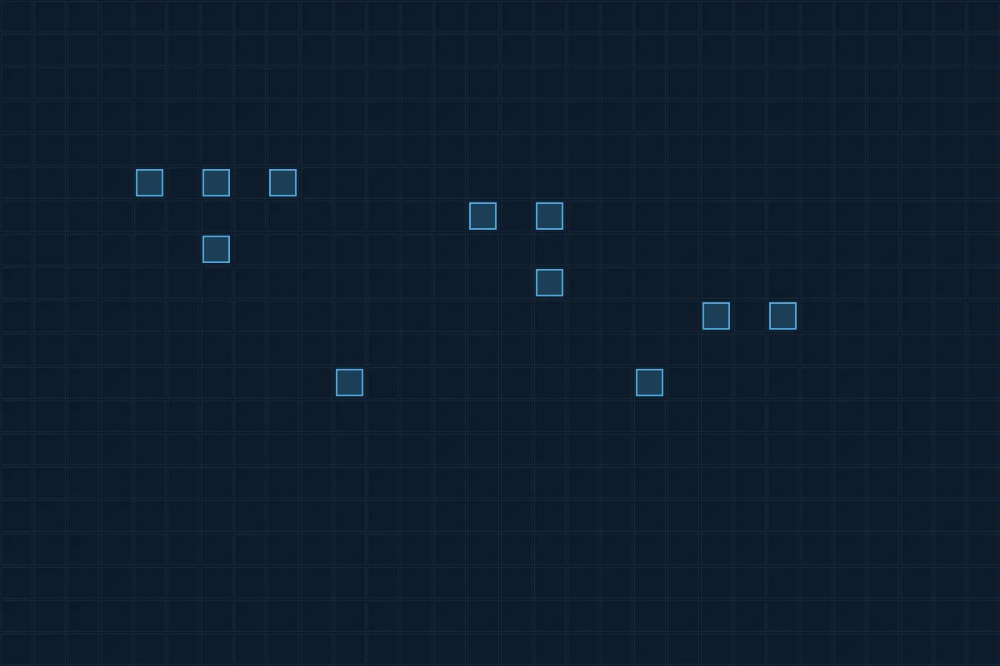

Digital arkitektur · siden 2015
Arkitektur for ekte digital transformasjon.
Eximius hjelper virksomheter å modernisere og digitalisere gjennom robust arkitektur, sømløs systemintegrasjon og effektiv prosjektledelse.
GS1HL7 FHIRIHE
01 — Tjenester
Tre ting vi gjør godt
Spisskompetanse på arkitektur og interoperabilitet – særlig i helsesystemer.

02 — Tilnærming
Åpne standarder framfor innlåsing
Vi bygger systemer og strategier som kobler sammen, skalerer og oppfyller krav. Det betyr åpne standarder framfor leverandørlåsing, bærekraftig arkitektur framfor kortsiktige fikser, og implementering framfor teori.
- Åpne standarder – ikke låst til en leverandør.
- Bærekraftig – arkitektur som varer.
- Praksis – implementering framfor teori.
03 — Slik jobber vi
Fire steg
Fra behov til gevinstrealisering.
- Behov
Hva som faktisk skal løses.
- Arkitektur
Valg av struktur og standarder.
- Anskaffelse
Krav, valg og kontrakt.
- Implementering
I drift, med gevinster.
Skal vi se på arkitekturen?
Ta kontakt for en samtale om prosjektet, spørsmålet eller utfordringen.